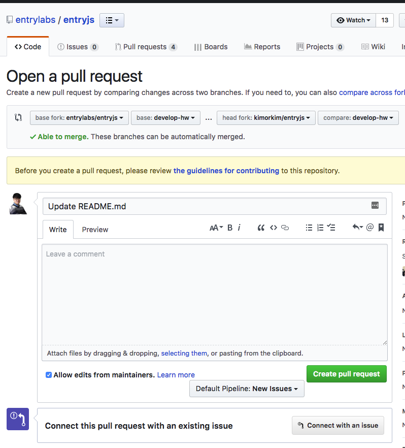

반영하기
엔트리의 하드웨어 모듈과 블록개발이 완료하였다면 이제는 반영하는 과정만이 남았습니다. 반영은 기본적으로 GitHub를 통해 Pull Request로 보내진 소스를 엔트리에 머지하고 이 머지된 소스를 실제 운영환경에 반영하는 절차를 거치게 되어 있습니다. 반영하는 과정에서 소스를 Pull Request를 보내셨다고 해도 무조건 적으로 반영되지는 않으며, 작성하신 코드를 분석하고 테스트를 통하여 동작을 확인한 이후에 반영이 이루어 지게 됩니다.
Pull Reqeust 올리기
기본적으로 이 문서의 내용을 이해하시고 정상적으로 작업하셨다면 GitHub의 본인계정의 Repository에 작업된 소스가 올라가 있으실겁니다. 이 상태를 기준으로 설명드립니다.

먼저 위의 그림처럼 자신의 브랜치로 이동하여서 페이지 왼쪽에 있는 New Pull Reqeust 버튼을 클릭합니다.

Pull Request가 시작되면 위와 같은 화면이 나오게 됩니다. base fork가 entrylabs/entryjs 이어야 하며, head fork가 본인계정/entryjs이어야 합니다. 반대로 되어서는 안됩니다. 또한 base에는 Pull Request를 보내주실 브랜치를 정해야 하며 compare에는 작업하신 브랜치명을 선택해 주셔야합니다. 반드시 작업하신 브랜치명을 정확히 선택하셔야 하며, 잘못된 브랜치를 선택할경우 정상적으로 소스를 머지할 수 없습니다.
Entry JS 레포지토리의 경우 기본 브랜치가
develop이기 때문에 많은 분들이develop을base로 선택해서 많이 보내주시는데 하드웨어 브랜치는 기본적으로develop-hw입니다. 작업하신 후에는develop-hw로 Pull Request를 보내주시기 바랍니다.
이와 별개로 Entry Hardware레포지토리는 따로 업체 브랜치를 관리하지 않습니다.master로 Pull Reqeust보내주시면 됩니다.
브랜치 선택이 완료되었으면 간단한 제목과 수정사항을 작성해 주신다음 Create pull request 버튼을 눌러 마무리를 합니다.

Pull Request가 완료가 되면 https://github.com/entrylabs/entryjs/pulls 주소에 접속 하시면 목록에 보내주신 Pull Request가 목록에 나타나게 됩니다.
하드웨어의 경우 https://github.com/entrylabs/entry-hw/pulls 입니다.
여기까지 확인 하시면 정상적으로 Pull Request를 올리셨습니다. 이후에는 저희 개발팀에서 피드백 드리는 내용대로 수정해 주시면 됩니다.
더 자세한 사용 방법은 Etc.의 Git 사용방법 문서를 참고해 주세요.